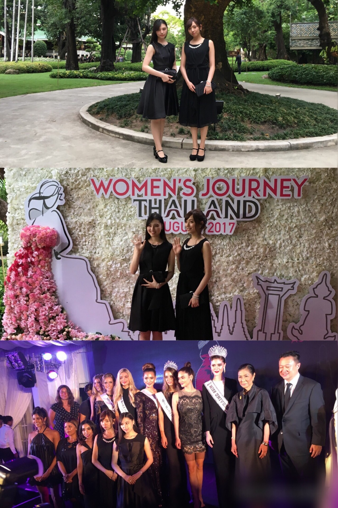
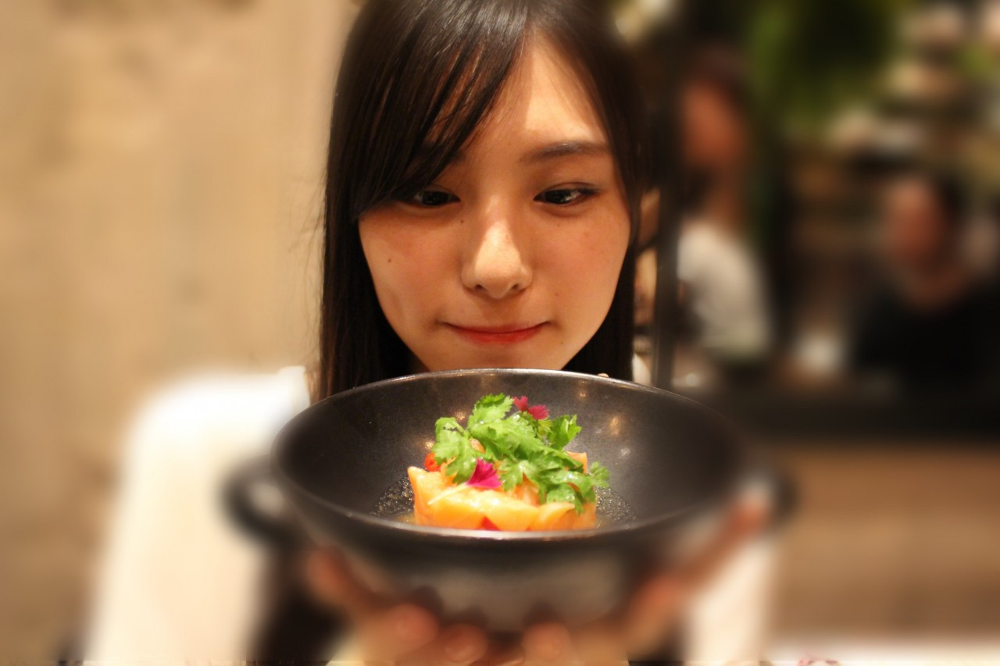
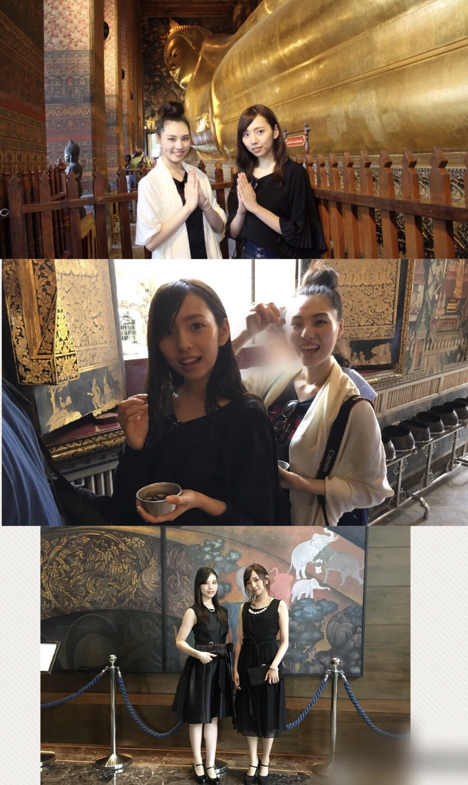
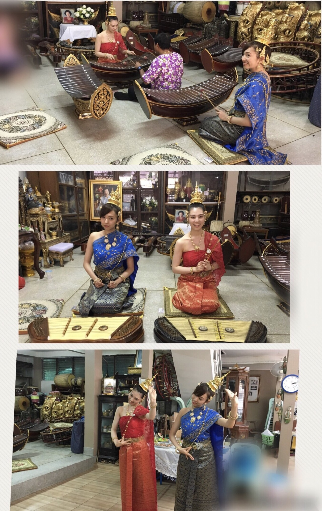

| 2017/08 02 Wed | in THAILAND_(．．*)vol.202 |
みなさんこんばんはー！
19歳 相楽伊織です！
もうご存知の方もいるかと思いますが、
7/30~まいちゅんとタイに行ってきました！
初タイヽ(*^^*)ノ
色々ありすぎて
何から書いていいか。。。
まず、
私達は今回なぜ行ったかというと
今回タイで｢Women's Journey 2017｣
というパーティーがあり、
それに参加するために行ってきました！
今回は乃木坂が
タイの観光大使を努めさせていただいていたので、
日本からは私たちが参加することになったのです！
パーティーというもの自体初めてで
すごく緊張しました！！
更に各国のミスが集まっていて
かなり圧倒されました(*_*)(*_*)
私、ミスユニバースの方とか
海外のモデルさんとかすごく好きで
今回間近で見られたのが
本当に嬉しかったです！！！
とても貴重な体験をさせて頂けて
本当に光栄でした。

少しだけ英語でお話出来たのも
嬉しかったヽ(*^^*)ノ
出来てたかどうかは分からないけど。。
更に
今回は三日間でたくさん観光もしてきました！
初日はオシャレなカフェレストランで
夕食を食べて
その後はタイ古式マッサージをうけました！
初めてタイ古式をうけたんですけど
少しアクロバティックで面白かったです！
でもしっかり
体全体がほぐれて
飛行機の疲れも吹っ飛びました(*^^*)
ご飯は香辛料が使われているものが多くて
少し辛いんですけど
どこのお店に行っても
全部美味しくて幸せでした～♡

これはサーモンのマリネ
特にマッサマンカレーとガパオと
カニカレーとスズキの丸揚げが美味しかった♡
そして二日目は
王宮とワット･ポーを観に行きました！
王宮の装飾は豪華な中にも品があり
すごくパワーを貰える気がしました。
途中、どこを歩いているのか
分からなくなったりもしましたが、(^^;
ガイドの方が
タイの歴史や建物について
色々説明してくださって
タイに関してもっと深く知りたいなと思いました。
仏教の国でもあるので
日本と似ている部分も多くありました。
ワット･ポーでは
コインを108(煩悩の数と同じ)の壺の中に
一枚ずつ入れると
願いが叶うということで
私達もそれをやりました！
ワット･ポーは横が46ｍ、縦が15ｍと
とても大きな大仏なんです。
実際に見るとかなり大きいし、
黄金に輝いていてすごく素敵でした。

その後はタイの伝統音楽と伝統舞踊を
体験に行きました♪
タイの木琴とキムという楽器を少し習いましたが、
どちらも音を出すのが難しかったです。
綺麗な音色でキムは独特な音でした(^^)
タイ舞踊は
盆踊りと少し似ていて手の形が
これまた独特な感じで
踊っていてとても楽しかったです♪

そして三日目は
タイで人気のスパで
マッサージをしてもらいました！
オイルとスクラブで
体がスベスベになりました♡
お店の中が
すごいゴージャスでリラックス出来ました♡
至福の一時でした♡
本当に幸せすぎて
完全に夢の中でした(*´∀｀*)
街並みも
食べ物もタイの方達も
本当に全部素敵でしたし、
とても旅をしやすい国でした。
また行きタイ！！！
絶対行きタイ！！！
思い出に残るとても刺激的な旅でした(^^)
i o r i .

コメント(550)
2017/08/02 23:30